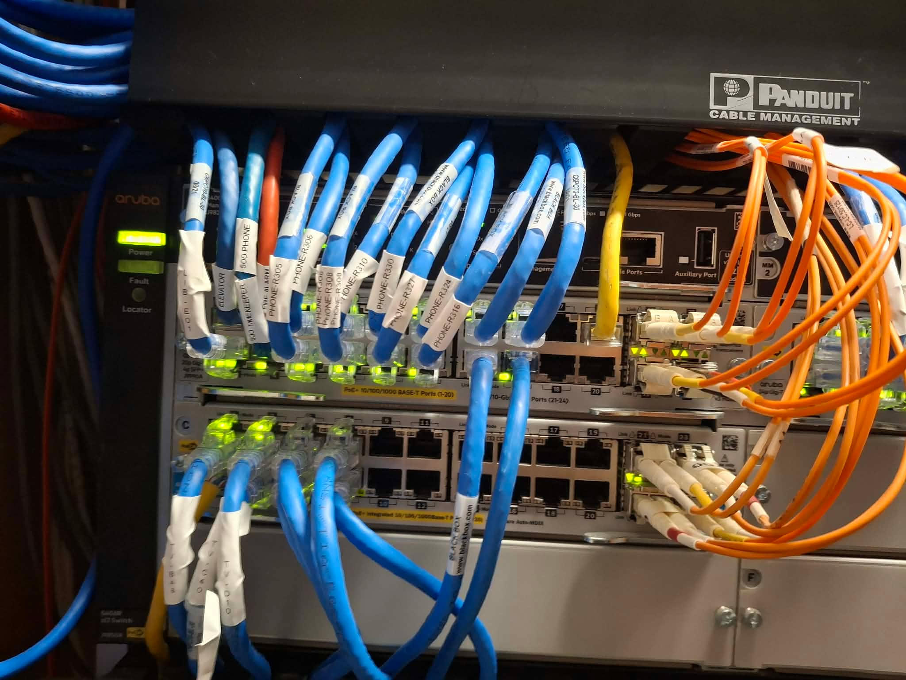
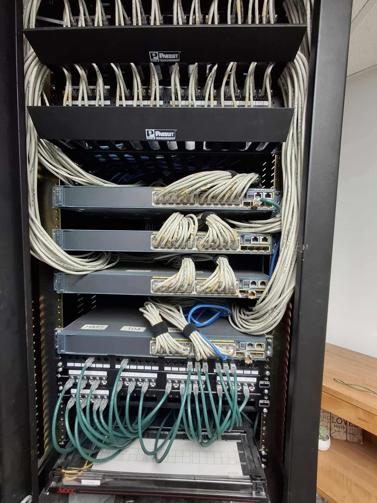
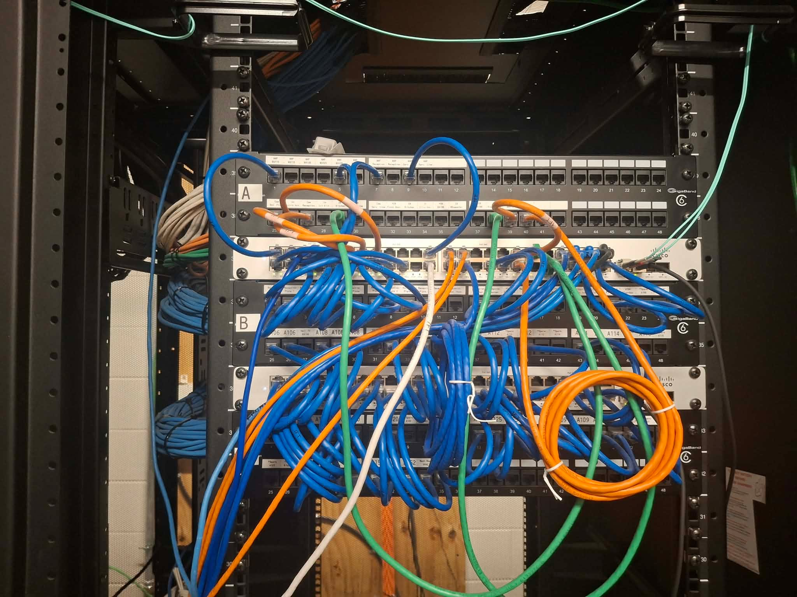
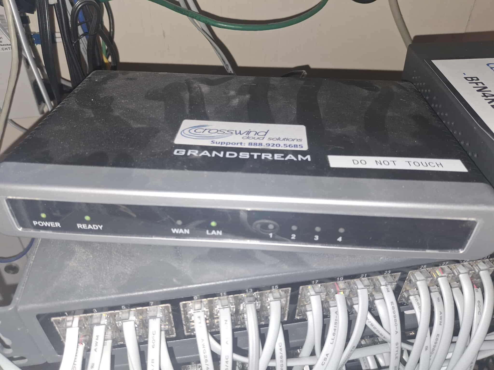
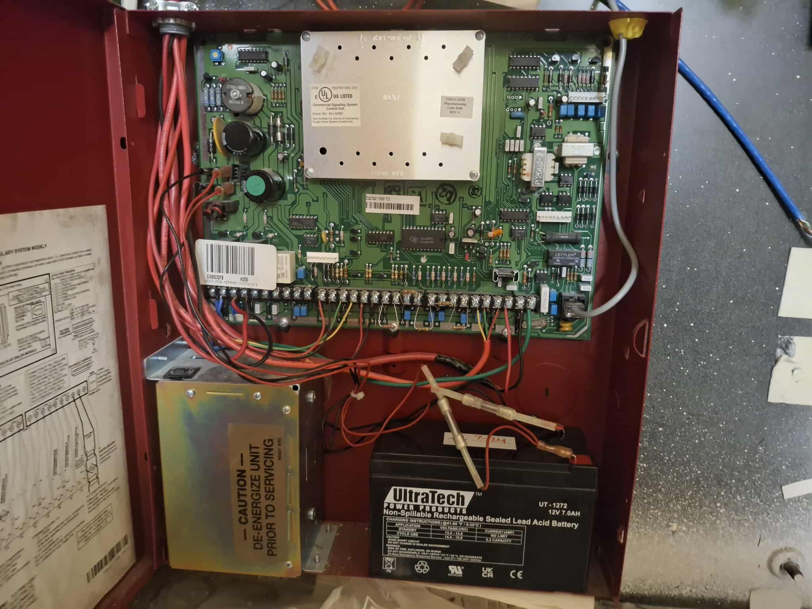

Surveillance Cameras
Camera system setup and support for property visibility, security coverage, and day-to-day peace of mind.
Western & Appalachian North Carolina + Surrounding Areas
Salt Cabling LLC delivers reliable low-voltage solutions for homes and businesses, including surveillance cameras, network installation, audio visual systems, network jack repairs, and voice phone line repairs.
What We Do
Clean installations, practical repairs, and dependable communication. The goal is simple: get your systems working the way they should.
Camera system setup and support for property visibility, security coverage, and day-to-day peace of mind.
Structured cabling and network setup for dependable wired connections where performance matters.
Audio visual support for cleaner setups, easier operation, and better overall presentation.
Troubleshooting and repair for damaged, unreliable, or improperly terminated network jacks.
Service for voice line issues to help restore clear, working communication quickly.
Featured Work
Placeholder projects are shown below. The carousel moves left to right automatically. Hover pauses it and enlarges the project. Click any project to open a detailed view.

Placeholder project for surveillance installation work.

Placeholder project for structured network installation.

Placeholder project for modern AV integration.

Placeholder project for jack repair and testing.

Placeholder project for phone line repair service.
Placeholder project for surveillance installation work.
Placeholder project for structured network installation.
Placeholder project for modern AV integration.
Placeholder project for jack repair and testing.
Placeholder project for phone line repair service.
About Salt Cabling LLC
Salt Cabling LLC provides practical low-voltage service with a focus on clean work, dependable results, and straightforward communication. Whether the job involves surveillance, networking, audio visual support, or line repair, the goal is always the same: fix the issue, improve the setup, and leave it better than it was found.
We also provide discounted labor prices for Churches and Ministries.
Western and Appalachian North Carolina, plus surrounding areas.
Contact for a quote, free of charge.
Get in Touch
Need help with surveillance cameras, network installation, audio visual work, network jack repairs, or voice phone line repairs? Reach out for a quote, free of charge.
Professional network installation and repair across western and Appalachian North Carolina, plus surrounding areas.
Surveillance Cameras
Network Installation
Audio Visual
Network Jack Repairs
Voice Phone Line Repairs
Contact for quote, free of charge.
Western & Appalachian NC
Surrounding Areas